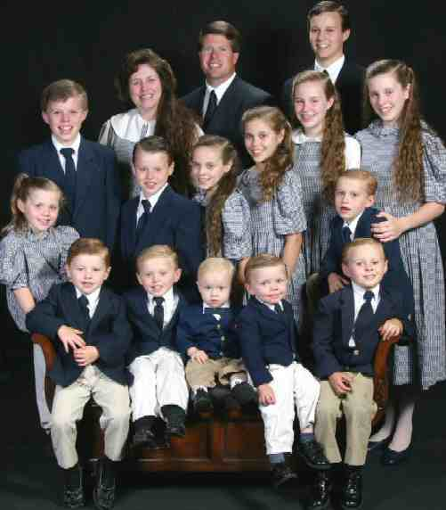

Thursday, July the 20th, 2006
back to: title, date or indexes
Who is the typical reader of Hooting Yard? This is a question I asked myself a few months ago, and I decided to find out. My initial thought was to do a readers' survey and subject the results to careful analysis, but instead I employed a so-called “consultant”, a private detective named Zoltan Cuspidor. What attracted me to Zoltan was that he was cheap (he asked only that I keep him supplied with breakfast cereal and butchers' pencils), indefatigable (having had his skull trepanned, he never needed to sleep), and a man of limitless charm (no examples provided).
We arranged to meet in a cow-strewn field during a thunderstorm, talked for over an hour, and later exchanged letters, which I shall reproduce here.
Dear Zoltan, I wrote, It was a great pleasure to meet you in a cow-strewn field during a thunderstorm. I am looking forward to the results of your investigation. I enclose some vouchers which you can take to that kiosk near the baking soda factory and exchange for breakfast cereal and butchers' pencils. Let me know when you need to replenish your supplies.
Dear Frank, he replied, Thank you for the vouchers. Already I have made great strides. I am reluctant to divulge my methods, but you should be aware that they are sinister, perilous, hugely complicated, troubling, fiendish, unfailingly accurate, and dastardly. Rest assured that not one of your readers will ever suspect that a clever piece of software I took the liberty of installing on your website sends an invisible pneumatic beam shooting out of the screen straight into their brains. I have much material to assess, and in fact my printer is still chugging out reams upon reams of neuro-data. One finding you ought to be aware of is that MindMap® wizard Tony Buzan is not the typical Hooting Yard reader. Indeed, he does not appear to be a Hooting Yard reader at all, an anomaly even I find perplexing, but I am sure I will get to the bottom of it.
At the beginning of May, Zoltan requested another meeting, this time at an abandoned ice rink. The ice had melted, and knots of bracken and bindweed were spreading over the site.
“There will be cows here soon,” observed Zoltan, in whose beard I could see tads of Special K, Coco-pops and Kellogg's cornflakes. I handed him some more vouchers.
“I have news,” he added.I was unreasonably excited by this, and began to jump about.
“The pneumatic brain-beam software is clogged,” said Zoltan, “It's been completely clogged up for the past three weeks, and when it gets clogged the data becomes contaminated and useless. I knew something was wrong when I tried a test and the typical Hooting Yard reader profile came out as Ghanaian football hero John Pantsil. I know for a fact he has never read a word of the site, as he is a confirmed Proustian with leanings towards Widdecombe.”
“Widdecombe?” I asked. As you can imagine, I was no longer jumping about. I was peering into the distance, watching as a few timid cows lumbered towards us, just as Zoltan had predicted.
“Ann Widdecombe, also known as Doris Karloff, the combative Conservative Member of Parliament and sometime novelist. Her debut, The Clematis Tree, was well-received, but it is not exactly what we would call a Dobsonian ubertext. Anyway, fear not! I shall unclog that which is clogged and press on with my invaluable work. I just wanted to keep you informed. And thank you for the vouchers!”
That was the last time I saw Zoltan Cuspidor. A month later, I received another letter.
Dear Frank, he wrote, Something happened when I unclogged the clogging that increased the effectiveness of my program in unexpected ways. That is why I am able to send you my definitive results so soon. You do not have just one typical reader, but a family of eighteen! This group is so homogenous that I cannot pluck one of them away from the others without bringing the whole house of cards crashing down, if you see what I mean. And so to my announcement. The typical Hooting Yard readers are a family of God-fearing Republicans from the state of Arkansas. They are Jim Bob and Michelle Duggar and their children Joshua, Jana, John-David, Jill, Jessa, Jinger, Joseph, Josiah, Joy-Anna, Jedidiah, Jeremiah, Jason, James, Justin, Jackson and Johannah. If you visit their website, splendidly named www.jimbob.info, I think you will agree that they are wholesome, toothsome and quite, quite lovely in every way. I was a little perturbed that they make no mention of their fanatical devotion to all things Hooting Yard on their site, until it occurred to me that even the happiest of families has a dark secret gnawing away at their vitals, and for the Duggars it is clearly Dobson, Blodgett, fictional athlete Bobnit Tivol, the gods of Gaar and all your other amusing characters. My work is done, but another stack of breakfast cereal and butchers' pencil vouchers wouldn't go amiss.

Jim Bob, Michelle, and fourteen out of sixteen children whose names begin with the letter J.
Hooting Yard on the Air, July the 26th, 2006 : “The Weird Spinney” (starts around 04:11)